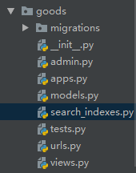
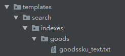
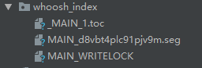
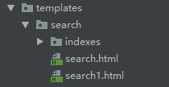
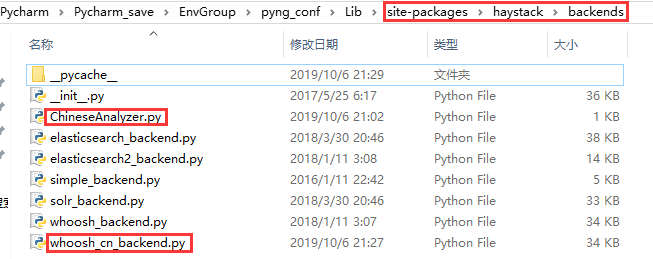

原文连接:https://www.cnblogs.com/yifchan/p/python-1-36.html
为了实现项目中的搜索功能，我们使用的是全文检索框架haystack+搜索引擎whoosh+中文分词包jieba
安装和配置
安装所需包
pip install django-haystack
pip install whoosh
pip install jieba去settings文件注册haystack应用
INSTALLED_APPS = [
'haystack', # 注册全文检索框架
]在settings文件中配置全文检索框架
# 全文检索框架的配置
HAYSTACK_CONNECTIONS = {
'default': {
# 使用whoosh引擎
'ENGINE': 'haystack.backends.whoosh_backend.WhooshEngine',
# 索引文件路径
'PATH': os.path.join(BASE_DIR, 'whoosh_index'),
}
}
# 当添加、修改、删除数据时，自动生成索引
HAYSTACK_SIGNAL_PROCESSOR = 'haystack.signals.RealtimeSignalProcessor'
索引文件的生成
要生成索引文件，首先你要配置，对哪些内容进行索引，比如商品名称，简介和详情；为了配置对数据库指定内容进行索引，我们要做如下步骤：
配置search_indexes.py文件
因为在django中数据库一般都是通过ORM生成的，首先我们在要在数据表对应的应用中创建一个 search_indexes.py 文件，例如，我现在要检索商品对应的表就是GoodsSKU表，而表是在goods应用下的，所以我在goods应用下新建 search_indexes.py 文件，截图如下：

在 search_indexes.py 文件中加入以下内容
# 定义索引类
from haystack import indexes
# 导入你的模型类
from goods.models import GoodsSKU
# 指定对于某个类的某些数据建立索引
# 索引类名格式:模型类名+Index
class GoodsSKUIndex(indexes.SearchIndex, indexes.Indexable):
# 索引字段 use_template=True指定根据表中的哪些字段建立索引文件的说明放在一个文件中
text = indexes.CharField(document=True, use_template=True)
def get_model(self):
# 返回你的模型类
return GoodsSKU
# 建立索引的数据
def index_queryset(self, using=None):
return self.get_model().objects.all()
指定要检索的内容
在templates文件夹下面新建search文件夹，在search文件夹下面新建indexes文件夹，在indexes文件夹下面新建要检索应用名的文件夹比如goods文件夹，在goods文件夹下面新建 表名_text.txt，表名小写，所以目前的目录结构是这样的 templates/search/indexes/goods/goodssku_text.txt ，截图如下：

在goodssku_text.txt 文件中指定你要根据表中的哪些字段建立索引数据，现在我们要根据商品的名称，简介，详情来建立索引，如下配置
# 指定根据表中的哪些字段建立索引数据
{{ object.name }} # 根据商品的名称建立索引
{{ object.desc }} # 根据商品的简介建立索引
{{ object.goods.detail }} # 根据商品的详情建立索引其中的objects可以理解为数据表对应的商品对象。
生成索引文件
使用pycharm自带的命令行terminal运行以下命令生成索引文件：
python manage.py rebuild_index运行成功后，你可以在项目下看到类似如下索引文件

使用全文检索
通过如上的配置，我们的数据索引已经建立了，现在我们要在项目中使用全文检索。
在需要使用检索的地方进行 form 表单改造
<form action="/search" method="get">
<input type="text" class="input_text fl" name="q" placeholder="搜索商品">
<input type="submit" class="input_btn fr" name="" value="搜索">
</form>如上所示，其中要注意的是：
- 发送方式必须使用get；
- 搜索的input框 name 必须是 q；
配置检索对应的url
在项目下的urls.py文件中添加如下url配置
urlpatterns = [
url(r'^search/', include('haystack.urls')), # 全文检索框架
]
检索成功后生成的参数
当haystack自动检索成功后，会给我们返回三个参数；
- query参数，表示你查询的参数；
- page参数，当前页的Page对象，是查询到的对象的集合，可以通过for循环类获取单个商品，通过 商品.objects.xxx 获取商品对应的字段；
- paginator参数，分页paginator对象。
可以通过如下代码测试参数


<!DOCTYPE html>
<html lang="en">
<head>
<meta charset="UTF-8">
<title>Title</title>
</head>
<body>
搜索的关键字:{{ query }}<br/>
当前页的Page对象:{{ page }}<br/>
<ul>
{% for item in page %}
<li>{{ item.object }}</li>
{% endfor %}
</ul>
分页paginator对象:{{ paginator }}<br/>
</body>
</html>注意，位置和文件名都是固定的，并且这只是测试文件，后面使用全文检索时记得不能使用search.html，改成其他名字。
数据+search.html返回渲染后页面
当haystack全文检索后会返回数据，现在我们需要一个页面来接收这些数据，并且在页面渲染后返回这个页面给用户观看，渲染并返回页面的工作haystack已经帮我们做了，那么我们现在只需要准备一个页面容纳数据即可。
在templates文件夹下的indexes文件夹下新建一个search.html，注意路径和文件名是固定的，如下图

利用检索返回的参数在search.html中定义要渲染出的模板和样式，我的页面如下
<div class="breadcrumb">
<a href="#">{{ query }}</a>
<span>></span>
<a href="#">搜索结果如下:</a>
</div>
<div class="main_wrap clearfix">
<ul class="goods_type_list clearfix">
{% for item in page %}
<li>
<a href="{% url 'goods:detail' item.object.id %}"><img src="{{ item.object.image.url }}"></a>
<h4><a href="{% url 'goods:detail' item.object.id %}">{{ item.object.name }}</a></h4>
<div class="operate">
<span class="prize">￥{{ item.object.price }}</span>
<span class="unit">{{ item.object.price}}/{{ item.object.unite }}</span>
<a href="#" class="add_goods" title="加入购物车"></a>
</div>
</li>
{% endfor %}
</ul>
<div class="pagenation">
{% if page.has_previous %}
<a href="/search?q={{ query }}&page={{ page.previous_page_number }}"><上一页</a>
{% endif %}
{% for pindex in paginator.page_range %}
{% if pindex == page.number %}
<a href="/search?q={{ query }}&page={{ pindex }}" class="active">{{ pindex }}</a>
{% else %}
<a href="/search?q={{ query }}&page={{ pindex }}">{{ pindex }}</a>
{% endif %}
{% endfor %}
{% if page.has_next %}
<a href="/search?q={{ query }}&page={{ page.next_page_number }}">下一页></a>
{% endif %}
</div>
</div>至此，我们可以在页面上搜索一下内容，应该是能成功的，但也有可能不会返回任何数据就算name就是你搜索的内容，这是因为我们现在使用的主要还是为英语服务的分词包，接下来我们要配置使用中文分词包了。
使用中文分词包jieba
在前面的配置中我们已经安装了jieba；
创建 ChineseAnalyzer.py 文件
进入虚拟环境下的 Lib\site-packages\haystack\backends 目录下新建 ChineseAnalyzer.py 文件
目录如下图

在文件中添加如下内容
import jieba
from whoosh.analysis import Tokenizer, Token
class ChineseTokenizer(Tokenizer):
def __call__(self, value, positions=False, chars=False,
keeporiginal=False, removestops=True,
start_pos=0, start_char=0, mode='', **kwargs):
t = Token(positions, chars, removestops=removestops, mode=mode,
**kwargs)
seglist = jieba.cut(value, cut_all=True)
for w in seglist:
t.original = t.text = w
t.boost = 1.0
if positions:
t.pos = start_pos + value.find(w)
if chars:
t.startchar = start_char + value.find(w)
t.endchar = start_char + value.find(w) + len(w)
yield t
def ChineseAnalyzer():
return ChineseTokenizer()
编写haystack可使用的 whoosh_cn_backend.py 文件
直接在 虚拟环境下的 Lib\site-packages\haystack\backends 目录下复制一份 whoosh_backend.py 文件 并且重命名复制文件为 whoosh_cn_backend.py；
在 whoosh_cn_backend.py 中导入我们编写的 ChineseAnalyzer 类
from .ChineseAnalyzer import ChineseAnalyzer更改haystack使用的分词包为 jieba 编写的中文分词类，大概在第160行左右
# schema_fields[field_class.index_fieldname] = TEXT(stored=True, analyzer=StemmingAnalyzer(), field_boost=field_class.boost, sortable=True)
schema_fields[field_class.index_fieldname] = TEXT(stored=True, analyzer=ChineseAnalyzer(), field_boost=field_class.boost, sortable=True)
配置whoosh引擎使用 whoosh_cn_backend.py
在settings文件中更改原来的配置如下
# 全文检索框架的配置
HAYSTACK_CONNECTIONS = {
'default': {
# 使用whoosh引擎
# 'ENGINE': 'haystack.backends.whoosh_backend.WhooshEngine',
'ENGINE': 'haystack.backends.whoosh_cn_backend.WhooshEngine',
# 索引文件路径
'PATH': os.path.join(BASE_DIR, 'whoosh_index'),
}
}
# 当添加、修改、删除数据时，自动生成索引
HAYSTACK_SIGNAL_PROCESSOR = 'haystack.signals.RealtimeSignalProcessor'
重新生成索引文件
python manage.py rebuild_index至此，就可以放心的使用搜索功能了，如图，搜索成功的显示页面
可以通过如下配置控制每个分页显示的搜索出来对象的数目
# 指定搜索结果每页显示的条数
HAYSTACK_SEARCH_RESULTS_PER_PAGE = 1